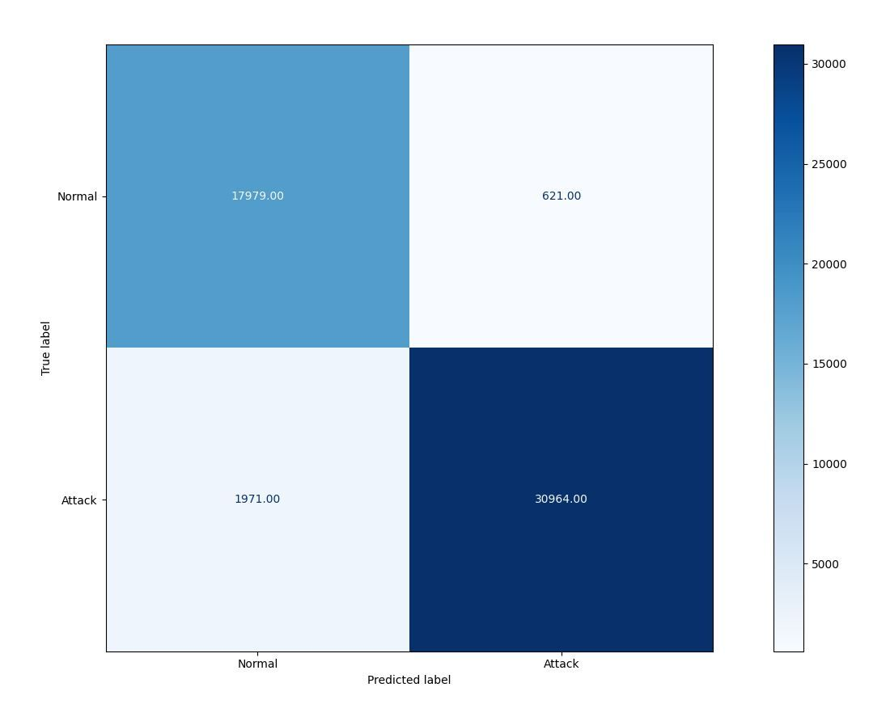
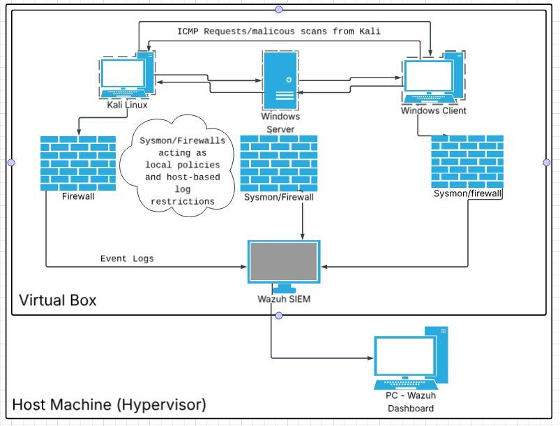
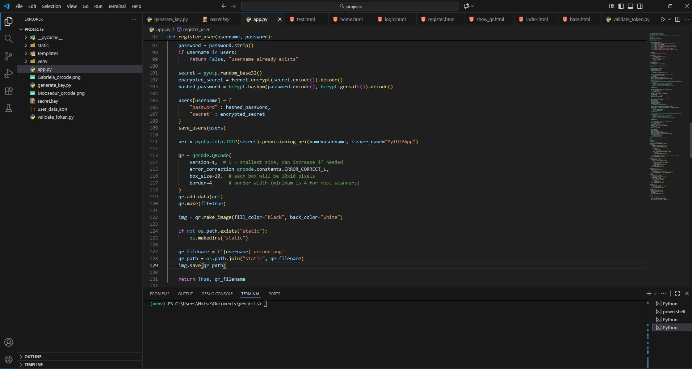
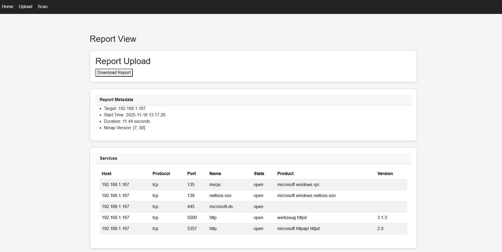
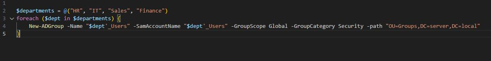

== [CLASSIFIED_PROJECT_FILES] ==
[FILE_01] MACHINE-LEARNING-PACKET-ANALYZER
Developed an end-to-end ML pipeline to preprocess 42 network features for intrusion detection. Optimized an XGBoost model via stratified shuffle splitting and hyperparameter tuning, achieving a 9% reduction in false positives across a dataset of 250k+ logs.
[FILE_02] SOC SIMULATION LAB
Developed a centralized log ingestion pipeline within a heterogeneous multi-VM lab. Configured custom rules and decoders to analyze traffic logs and command-line activity, mapping 15+ security use cases. Implemented an automated ELK stack (Elasticsearch, Logstash, Kibana) framework that increased threat visibility and cut response times by 40%.
[FILE_03] FULL-STACK MFA PASSWORD MANAGER
Developed a full-stack password management application with a focus on cryptographic best practices. Implemented a robust security layer including bcrypt password hashing and multi-factor authentication. Mitigated automated threats by 80% using server-side rate limiting and account lockouts, while delivering a seamless user experience via a custom Bootstrap-driven UI.
[FILE_04] PYTHON-NETWORK-PORT-SCANNER
Engineered a web-integrated port scanner leveraging python-nmap for automated network auditing. Optimized service detection scripts to achieve a 40% gain in scanning efficiency. Implemented a Flask-driven frontend for real-time result visualization and PDF/CSV report exports, streamlining the vulnerability assessment workflow by 70%.
[FILE_05] WINDOWS-SERVER-ACTIVE-DIRECTORY-LAB

Architected a hardened Windows Server Core environment to deploy a secure Active Directory infrastructure. I engineered a scalable OU hierarchy centered on the Principle of Least Privilege (PoLP) and utilized Group Policy Objects (GPOs) to automate security baselines and identity management across the domain.
Type 'back' to return to menu.